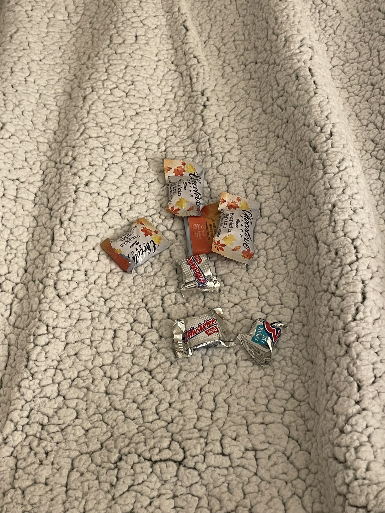
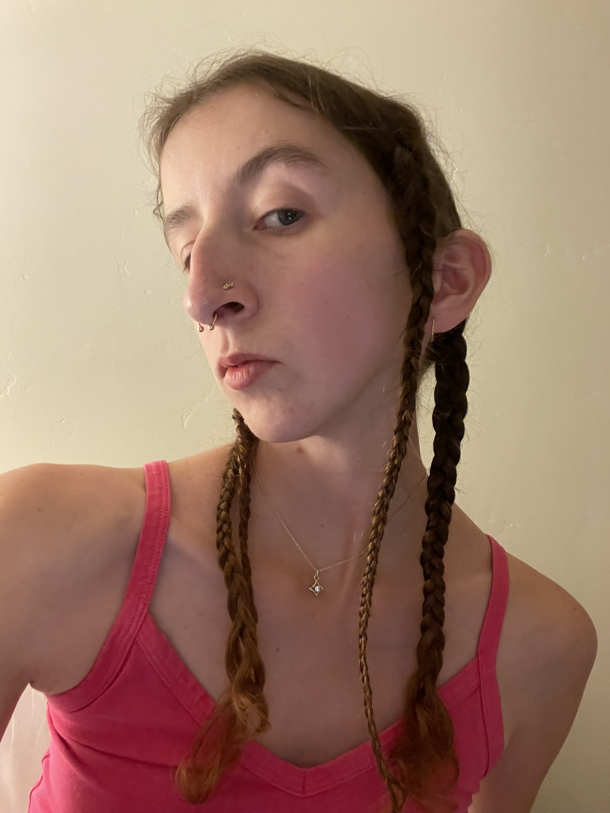
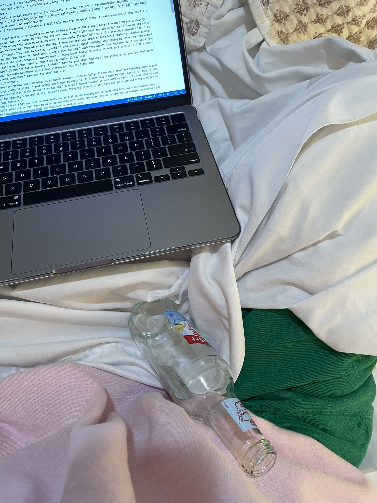

This is Emma leaving messages
I've got a thing. I keep fucking up said thing. I keep thinking about old things when it's all supposed to be new. I'm not nice. I'm not smart. I'm not ready. I'm all good. I'm not eating. I'm sitting. I have bad posture. I have a metal rod in my back. I want to be better.
I've got a boy who I don't got. I want him and I don't. I miss him and I hate him and he texts me when he's in town then leaves me on read and he's not special but he is and he was my first kiss and he's really just an asshole, long and short. I've got a new boy and he's being taken for granted. I'm taking him for granted. He's 58 miles away.
I've got a long shot dream of grad school. I've got emails out to professionals. I've got letters of recommendation incoming. I've got letters I'll never receive. I've got a search history that reads "eating disorder clinics near me." I've gotta eat.
I want to be a professor. I want to be a girlfriend but maybe not a wife and definitely a mother. I want a son with curly hair like mine and I want my brother to call me more.
I want my mom to be okay and I want that more than anything.
I'm so grateful to have girlfriends. I love having girlfriends. I feel truly loved by my girlfriends. I never question if they think I'm pretty or funny or cool. I think they love me even when I'm not drunk enough to dance with them.
I love drag queens.
My new boyfriend who's not my boyfriend texted me at 12:47 a.m. to say he had a fever of 104.7 and I haven't heard from him since.
I really don't like getting hit on at bars. It makes me feel like I'm not real. I don't like when men who don't know me think they want me. That's just lust. I don't feel right the last couple of days. I have work to do that I can't bring myself to start and I just stare at my phone and feel like I'm getting dumber and dumber. I used to be so much smarter and I had things to talk about. Now I just listen. I'm not even much of a writer anymore. I'm in a weird place. I'm in a parking lot.
I'm making art I'll never share. I'm doing this instead of doing work. I hate work. I'm done with work. I'm craving a Smirnoff Ice. I kind of never want to drink again. I kind of still feel drunk from the other night but it's been two days.
I found an eating disorder clinic in Carlsbad. They offer art therapy. I knew Carlsbad was south of here but I couldn't remember exactly where so I looked it up on a map. That's where they have LegoLand.
Last night I had a dream that my mom cheated on her boyfriend. I don't like him and I wish they didn't live together but I was still really mad at her.
There's so much to think about all the time. Somehow I haven't been thinking about Palestine nearly as much as I used to. I didn't even realize that until now. I don't know what to do about it. All my friends are starting to go to McDonald's again and I don't know if I'm disappointed in them. A year of commercial boycotting hasn't changed anything in Gaza. People are still being killed every day.
I hate one word responses. I hate you. I never want to hear from you again. (I do.)
I miss living downtown. I want a studio apartment with a full kicthen and natural light.
I hate Brock from the show Reba more than I hate any fictional man.
I just braided my hair into four braids and took pictures of myself because I look so silly. I'm having a pepsi and thinking about a peach and an ice cold glass of water. I hope everyone I love sleeps well tonight.
I made a list of the things I want to study in grad school and I need to email TJ. If I want help I need to start asking for help. I need to put my bierox in the freezer.
There is a 4 hour old bowl of falafel on the corner of my bed and I'm lucky I havent knocked it over with my feet. I'll have time to clean on Tuesday.
Listening to Happy News for Sadness. I decided to stay in Santa Cruz. I'm going to move in with Lily and get a job.
What song do you listen to when a boy you used to love texts you at 2:30 in the morning and it seems like he's not sober anymore?
Maybe he's still sober and he just sees me as an option when he's horny. Whatever. For me it came out of nowhere. Listening to Dust Bowl by Ethel Cain.
It is so hard not to text motherfuckers you know you shouldn't be texting.
All of the people I love who have had bad things happen to them are in the back of my mind constantly. Rachelle replied to my story saying that I made her laugh. I'm being funny on the internet and her son, my age, is dead. What did she do to deserve that. What did he do. When he died I made a playlist. That's how I coped with Jeffrey's suicide too. I never met Jeffrey and I hardly knew Mayson but when someone that you love loses someone that they love you feel it, only 1% as much as they do. And how do you help. I love Rachelle and I know that she'll never be whole again.
Tonight I sat with a man who drank 5 beers in 1 hour. What the hell.
Waiting on test results to come back. Just yelled at my dad on the phone then called him back to talk about the cat and tell him I love him. Oh, and I went on a first date last week. He hugged me right away and kissed me a lot to end the night. Still don't know that he likes me though.
This is the vibe rn btw.